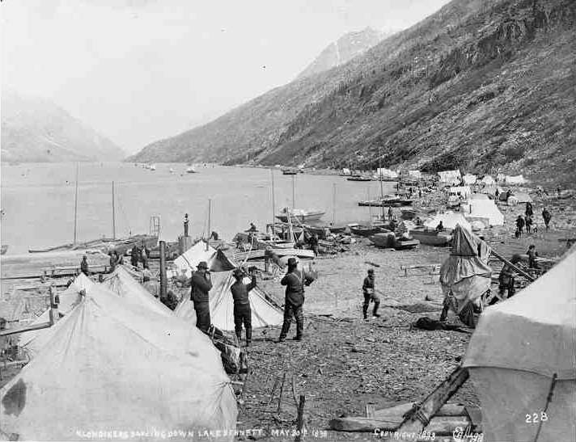
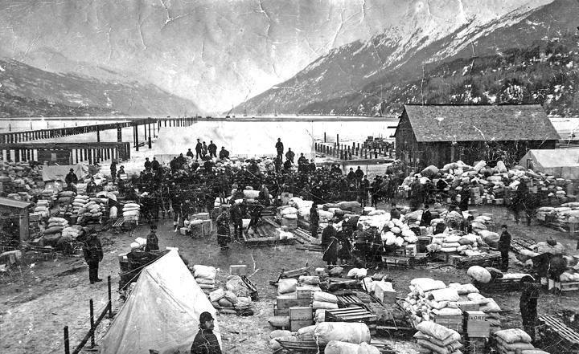
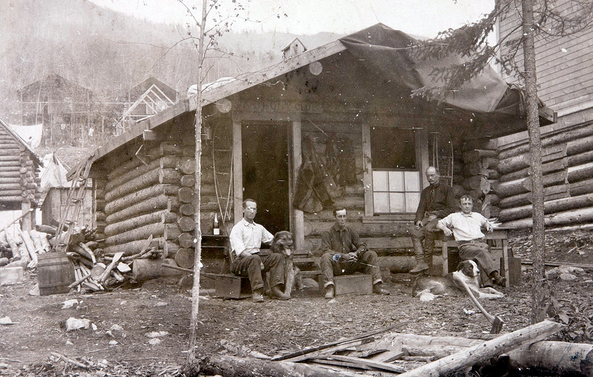

Биография
Джек Лондон (1876-1916) был американским писателем и журналистом, наиболее известным своими приключенческими романами и рассказами о жизни в дикой природе.
Лондон родился в Сан-Франциско в бедной семье и вынужден был бороться за выживание с самого раннего возраста. В 1897 году он отправился на Аляску в поисках золота, но безуспешно. Вместо этого он начал писать рассказы о своих приключениях в суровых условиях Северного Края, которые позже стали основой для его знаменитых романов "Зов предков" и "Белый клык".
Лондон был страстным социалистом и борцом за права трудящихся. Он путешествовал по миру и писал о бедствиях и несправедливостях, которые он видел. Он также был приверженцем идеи "сильного человека", который должен использовать свою силу и ум, чтобы достичь своих целей.
  Творчество
Творчество Джека Лондона включает в себя романтические и приключенческие романы, социальные романы, рассказы и статьи. Его писательский стиль был простым и ясным, что делало его произведения доступными для широкой аудитории.
Самые известные произведения Лондона - это "Зов предков" и "Белый клык", которые основаны на его собственных приключениях на Аляске. В этих романах он исследовал тему взаимодействия человека и природы, а также отношения между людьми и животными. Он описывал сильных и жестоких героев, которые вынуждены бороться за выживание в суровых условиях.
Однако, помимо приключенческих романов, Лондон также написал социальные романы, такие как "Железный каблук" и "Над пропастью во ржи". В них он исследовал проблемы социальной справедливости и борьбы с бедностью и неравенством.
Лондон был известен своей страстью к социализму и борьбе за права трудящихся. Он критиковал капитализм и эксплуатацию рабочего класса в своих произведениях и статьях.
В целом, творчество Джека Лондона является выразительным и зажигающим, сильным и дерзким.
Он исследовал вопросы природы человеческой жизни и социальной справедливости, оставляя незабываемый след в американской литературе.
Личная жизнь
Личная жизнь Джека Лондона была насыщенной и интересной, хотя в ней было и много трудностей.
Он родился в 1876 году в Сан-Франциско, в бедной семье. В юности он занимался различными работами, в том числе работал на рыболовных судах и золотых приисках. В 1897 году он отправился на Аляску в поисках золота, но безуспешно.
В 1900 году Лондон женился на Элисе Мэй Мэддокс, журналистке и фотографе. Они были вместе до ее смерти в 1913 году. У них было двое детей.
Позже Лондон женился на Чармингс Эстербрук, которая была его секретарем. У них было двое детей.
В личной жизни Лондон часто сталкивался с трудностями. Он страдал от алкоголизма и депрессии. Кроме того, у него были проблемы со здоровьем, связанные с беспокойным образом жизни и трудностями в молодости.
Тем не менее, Лондон оставил огромное наследие в литературе. Он был успешным писателем и активистом, который боролся за социальную справедливость и права трудящихся. Его жизнь и творчество продолжают вдохновлять людей по всему миру.
Хобби
Джек Лондон был увлеченным человеком и у него было много хобби.
Одним из его самых больших увлечений была чтение. Он любил читать как классическую, так и современную литературу. Лондон также был увлечен языками и изучал различные языки, включая французский, немецкий и японский.
Еще одним его увлечением была природа. Лондон часто бывал на природе, где охотился, рыбачил, путешествовал и писал. Его опыт в области охоты и рыбалки, а также его наблюдения за дикой природой, нашли отражение в многих его произведениях.
Лондон также был увлечен спортом. Он любил бокс и занимался им, а также участвовал в гонках на собаках и путешествиях на яхтах.
Кроме того, Лондон был увлечен политикой и социальными вопросами. Он был активистом, который боролся за права трудящихся и бедных. В своих произведениях он часто поднимал социальные и политические темы и выступал за социальную справедливость.
В целом, увлечения Лондона были широкими и разнообразными, и они отразились в его творчестве, делая его произведения уникальными и интересными.